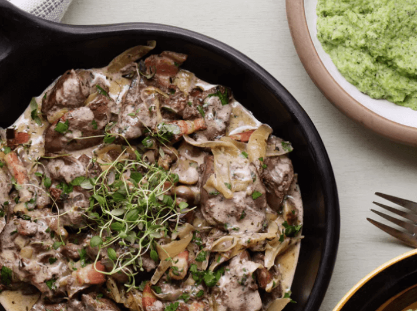

Hühnerleber in Pilzsauce
(30 Min., 4 Port., F: 84 g, K: 15 g, E: 33 g)

Zutaten
Für die Hühnerleber:
- 150 g Schinkenstreifen, 175 g Pilze, 75 g Frühlingszwiebeln, 2 TL Butter, 450 g Hühnerleber, 300 ml Schlagsahne, 125 ml Petersilie, Salz & Pfeffer
Für das Brokkolipüree:
- 650 g Brokkoli, 75 g Butter, 75 g Frischkäse, Salz & Pfeffer
Vorbereitung
- Frühlingszwiebeln in Ringe schneiden, Pilze vierteln, Petersilie grob hacken. Blumenkohl in Röschen schneiden, Schinkenstreifen in Stücke schneiden.
Kochen
- Brokkoli in einem Topf zum Kochen bringen.
- Wenn Brokkoli weich ist, Wasser abgießen. Butter und Frischkäse dazugeben und mit einer Gabel zu Püree stampfen. Mit Salz & Pfeffer abschmecken.
Braten
- Schinkenstreifen anbraten bis sie knusprig sind, dann herausnehmen.
- Zwiebeln und Pilze anbraten. Wenn goldbraun, zu den Schinkenstreifen legen.
- Butter in die Pfanne geben und Leber einige Minuten beidseitig anbraten. Schlagsahne dazugeben und zum Köcheln bringen.
Servieren
- Brokkolipüree mit Leber und Pilzsauce anrichten, mit Petersilie garnieren.
Originalrezept unter: Dietdoctor.com